The C/C++ Development perspective is probably the perspective where you'll spend most of your time. In it, you'll develop and build your programs. As you move further through your project, you'll likely use this perspective as the jump point for doing your debugging, program analysis, and target system integration.
Suggested prior reading:
Related information:
Before you begin C/C++ development, you must create a project to contain your code; in the IDE, all your work must be contained in projects.
The views in the C/C++ Development perspective are driven primarily by selections you make in the C/C++ Editor and the C/C++ Projects view, a specialized version of the Navigator view. Ensure you understand their functionality thoroughly.
In addition to perspectives and views, the IDE has two major "sections": wizards and the Launch Configurations dialog. To create and run your first program, you need both. The wizards let you quickly create a new project; the Launch Configurations dialog lets you set up how your program runs. Once you've used all these parts of the IDE for the first time, you'll be able to create, build, and run your programs very quickly. For more information, see the Common Wizards and Starting Your Programs chapters.
The C/C++ Development perspective also has many features that help you develop code quickly. Once you've learned the basics of creating programs and running them (in this chapter), take some time to browse through this chapter.
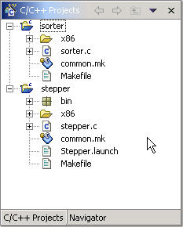
The C/C++ Projects view is probably the most important view in the IDE because you control your projects with it. The selections you make in the C/C++ Projects view greatly affect what information the other views display.
The C/C++ Projects view offers a filtered and slightly rearranged version of the Navigator view.
The Navigator view is part of the core Eclipse platform, so some of the features are documented there:
The C/C++ Projects view has many of the same features as the Navigator view, but is configured specifically for C and C++ development. At first glance, the two may seem identical, but the C/C++ Projects view:
To open files and display them in the editor area:
|
In the C/C++ Projects view, double-click the file to be opened. The file -- even if it's executable -- opens in the editor area. |
Because the C/C++ Projects view hides closed projects, you must use the Navigator view to open them.
To open projects:
|
In the Navigator view, right-click your project, and select Open Project. The project opens and appears in the C/C++ Projects view. |
To filter files in the C/C++ Projects view:
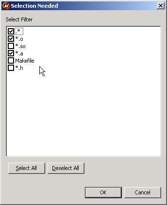
The C/C++ Projects view shows you the outline of .c, .cc, and .h files:
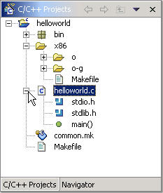
This outline is similar to that found in the Outline view. To learn more about the Outline view, see the "Code synopsis (Outline view)" section in this chapter.
The C/C++ Projects view shows you the outlines of executables as well. You can examine the structure of executables to see not only the functions that you declared and used in the file, but the elements that were called indirectly, such as malloc(), _init(), and errno:
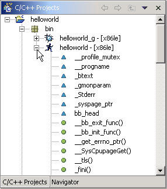
To view a file outline in the C/C++ Project view:
|
In the C/C++ Projects view, click the "+" symbol to the left of any .c, .cc, or .h, or executable file. All the executables are grouped in the virtual bin directory. The tree expands to show the outline for that file. Click the "-" symbol to collapse the tree again. |
If you're creating an application from scratch, you'll probably want to create a QNX C Application Project or a QNX C ++ Application Project.
 |
For examples of creating specific types of projects, see the Tutorials book. We recommend that you create a few tutorial projects before you do too much reading. Having hands-on experience with the IDE gives you a better context for what you read in this guide.
For a complete explanation of all the C/C++ project types and options, see the Common Wizards chapter. |
To create a "Hello World!" QNX C Application Project:
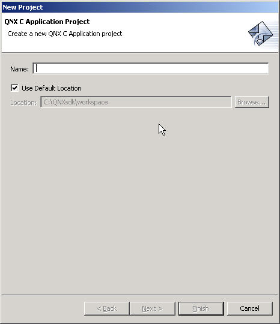
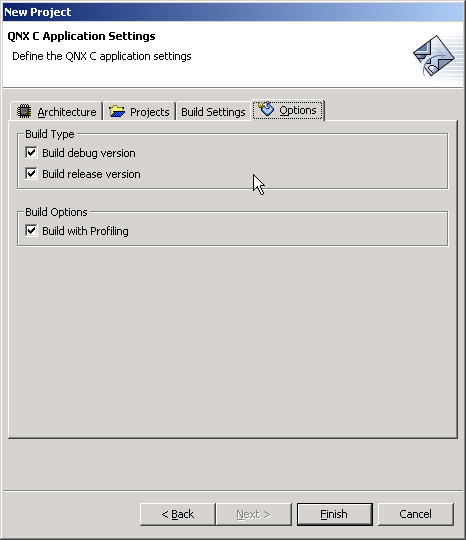
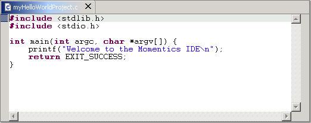
Once you've created your project, you can build it. The IDE uses the same make utility and makefiles used on the command line. The IDE can perform makes automatically or let you do them manually. When you do manual builds, you can also decide on the scope of the build.
You can watch the progress and see the build information in the C-Build view. If building your programs generates any errors or warnings, you can see them in the Tasks view.
This section includes:
The IDE uses a number of terms to describe the scope of the build:
By default, the IDE automatically rebuilds every time you change a resource (e.g. file). This is handy if you have only a few open projects and if they're small. As the projects get larger, this feature can become a bit of a hindrance. You may find that you prefer to turn autobuilding off.
To turn off autobuilding:
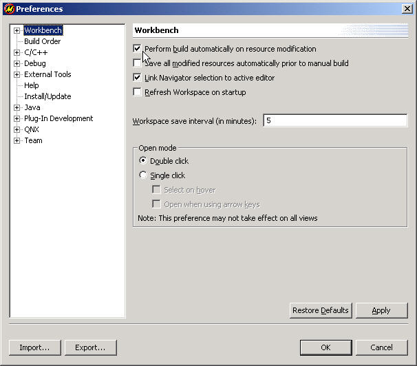
The IDE builds automatically every time you save a change. Thus, if you're using the default IDE configuration, you don't need to do anything. Even in this setting, you can build manually as well. Because the IDE always does incremental builds while in autobuild mode, you may wish to manually do a clean build to ensure you have fresh executables.
Manual builds let you choose the scope of the build, as well as whether to do a Build, a Clean, or a Rebuild.
The IDE lets you manually choose to rebuild all your open projects. Depending on the number of projects, the size of the projects, and the number of target architectures, this can take a significant amount of time.
To rebuild all your open projects:
|
From the main menu, select Project-->Rebuild All. |
Because rebuilding all your open projects may be time-consuming, you may often wish to build only certain projects individually.
To rebuild a single project:
|
In the C/C++ Projects view, right-click a project and select one of:
The IDE builds the selected project as you desired. For more information on the build methods, see the "Build terminology" section in this chapter. 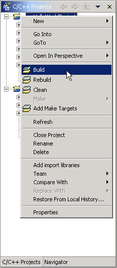 |
To have the IDE save your unsaved resources before manual builds:
The IDE lets you determine the build order of your projects. If certain projects must be built before others, you can set that. If your project refers to another project, the IDE builds that project first.
|
Setting the build order doesn't cause the IDE to rebuild projects that depend on the project; you must rebuild all projects to ensure all the changes are propagated. |
To manually configure the project build order:
|
In this subsection, "targets" refer to actions in the makefiles, not target machines. |
A make target is an action called by the make utility to perform a customized build-related task. For example, many makefiles support a target named clean, which gets called as make clean. The IDE lets you call your own target such as myMakeAction to be called as make myMakeAction. You can also use a make target to pass options such as CPULIST=x86, which causes the make utility to build only for x86. Of course, these options work only if they're already defined in the makefile.
If you've added your own make targets, you can configure the IDE to call them specifically.
To add a customized make target to the C/C++ Project view right-click menu:
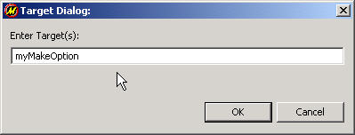
To use a customized make target:
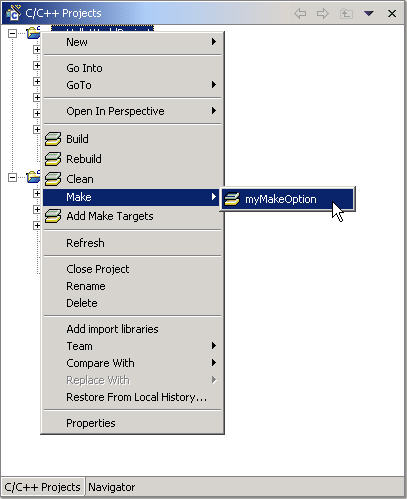
Once you've built your project, you'll want to run it. The IDE lets you run or debug your executables on either a local or a remote QNX Neutrino target machine. For a description of local and remote targets, see the IDE Concepts chapter.
To run or debug your program, you must create a QNX Target System Project that specifies how the IDE communicates with your target. You must also create a Launch Configuration that describes how the program runs on your target.
|
For a complete description of the Launch Configurations dialog and the available options, see the Starting Your Programs chapter. |

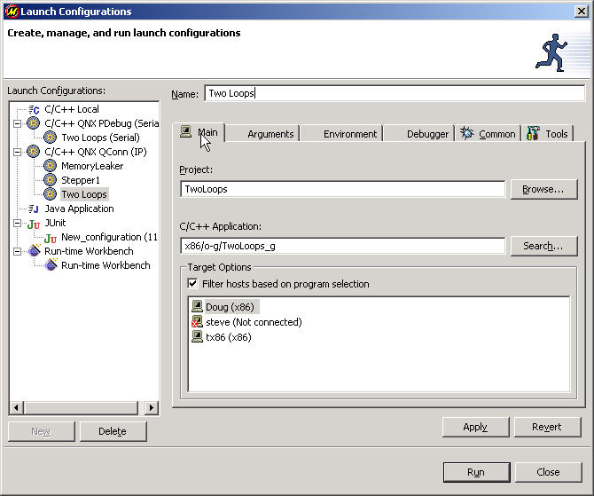
|
If the Program Selection dialog is blank, you must cancel and build your project. To learn how to build projects, see the "Building projects (make)" section. |
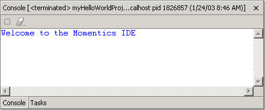
Within the C/C++ Development perspective, the C/C++ Editor is where you'll likely spend the great majority of your time -- you use it to write and modify your code:
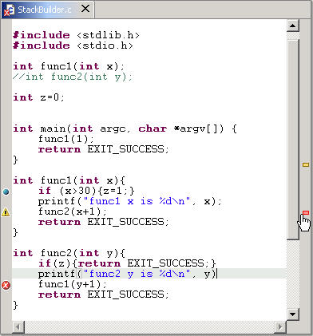
The C/C++ Editor drives many of the other views. As you code, many of the other views update dynamically (even if you haven't saved).
This section includes:
The C/C++ Editor has a gray border on each side. The border on the left margin might contain icons that flag errors, warnings, or problems detected by the IDE. It also displays icons for any bookmarks, breakpoints, or tasks from the Tasks view. The icons in the left margin correspond to the line of code.
The border on the right margin displays red and yellow bars that correspond to the errors and warnings from the Tasks view. Unlike the left margin, the right margin displays the icons for the entire length of the file.
The IDE can help you finish the names of functions if they're long, or you can't remember the exact spelling.
To use Content Assist:
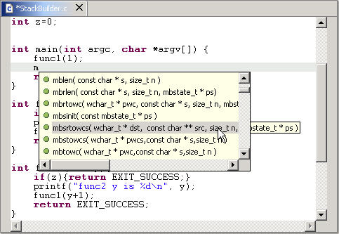
The IDE can help you by inserting snippets of code such as an empty do-while structure. If you've used the Content Assist feature, you may have already noticed this feature; you access it the same way.
To use Code Templates:
|
Follow the procedure for using Content Assist, with the following exception:
|
To add Code Templates:
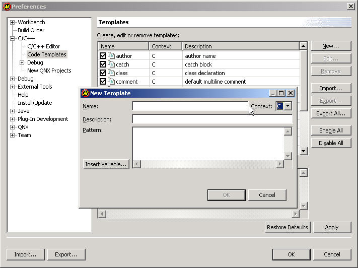
To insert the #include directive for any documented QNX Neutrino function:
The IDE can give you information about functions while you're coding.
To use hover help:
|
In the C/C++ Editor, place your pointer over a function.
A tag appears, showing the function summary and synopsis: 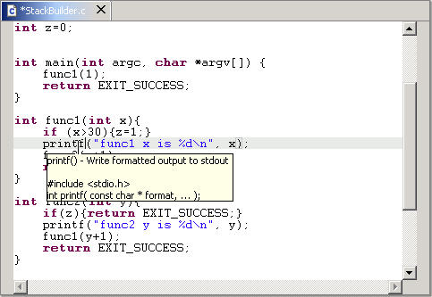 |
The IDE makes it easy to comment out large sections of code. You can quickly add // characters to the beginning of lines, letting you comment out large sections, even if they have /* */ comments. When you uncomment lines, the IDE removes the leading // characters from all lines that have them, so be careful not to accidentally uncomment sections. Also, the IDE comments or uncomments the selected lines -- if you select a partial line, the IDE comments out the entire line, not just the highlighted section of code.
To comment or uncomment a block of code:
You can change the font, set the background color, display line numbers, and control many other visual aspects of the C/C++ Editor. You can also configure context highlighting, and change how the Code Assist feature works.
To access the C/C++ Editor preferences dialog:
The IDE lets you use other editors, but you should consider the added functionality the C/C++ Editor offers before changing.
The C/C++ Editor is highly integrated with the IDE. The other views are designed to support the C/C++ Editor by updating dynamically. Since other editors aren't designed to interface with the IDE, you won't get the support from the views that the IDE provides.
You can use other editors either outside or inside the IDE.
You can edit your code with an editor started outside of the IDE (e.g. from the command line). When you're done editing, you'll have to synchronize the IDE with the changes.
To synchronize the IDE with changes you've made outside of the IDE:
|
In the C/C++ Projects view, right-click the tree pane and select Refresh. The IDE updates to reflect any changes you've made (such as creating new files). |
The IDE lets you set file associations that determine the editor you use for each file type. For example, you can tell the IDE to use an external program such as WordPad to edit all .h files. Once that preference is set, you can double-click a file in the C/C++ Projects view, and the IDE automatically opens the file in your selected program.
If the IDE doesn't have a set association for a certain file type, it uses the OS defaults. Thus, in Windows, double-clicking on a .DOC file automatically opens the file in MS Word or WordPad.
For information about file associations, follow these links in the Eclipse Workbench User Guide: Reference-->Preferences-->File Associations.
The IDE has many features that help you work faster. Not all the features are things you'd necessarily think to look for; after you've used the IDE for a while, take some time to read this entire section.
This section includes:
The Tasks view provides you with a list of errors and warnings related to your projects. These are typically syntax errors, typos, and other programming errors found by the compiler:
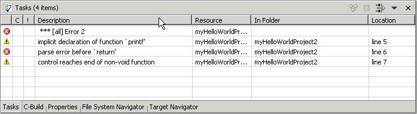
The Tasks view is part of the core Eclipse platform. For more information about the Tasks view, follow these links in the Workbench User Guide: Reference-->User interface information-->View and Editors-->Tasks view.
The IDE also shows corresponding markers in several other locations:
To quickly jump to the source of errors (if the IDE can determine where it is):
|
In the Tasks view, double-click the error marker |
To jump to errors sequentially:
|
Click the Jump to next error marker button |
Depending on the complexity and stage of your program, the IDE can generate an overwhelming number of errors. The IDE lets you customize the Tasks view so you see only the errors you want to see.
To access the error filtering dialog:
|
In the Tasks view, click the Filter icon 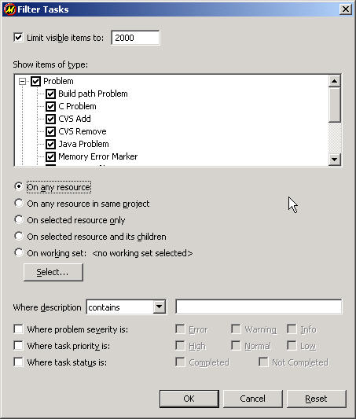 |
The Tasks view lets you create your own tasks. In addition to having the Tasks view automatically list build errors, you can set personal reminders regarding the unfinished function you're writing, the error handling routine you want to check, or anything else.
To access the New Tasks dialog to add a personal task:
|
In the Tasks view, right-click the tasks pane and select New Task.
A New Tasks dialog appears: 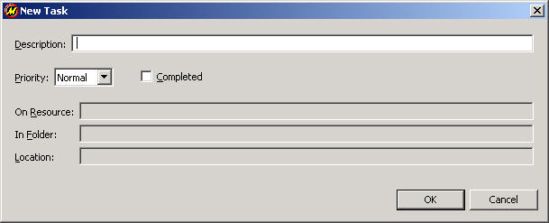 |
To remove a personal task:
|
In the Tasks view, right-click the task and select one of Delete or Mark Completed. |
The Outline view gives you a structural view of your C/C++ source code:

It shows the elements in the source file in the order they occur, including functions, libraries, and variables. You may also sort the list alphabetically. If you double-click an entry in the Outline view, the C/C++ Editor moves the cursor to the start of the item selected. (For example, to jump to the start of main() in the C/C++ Editor, double-click main() in the Outline view.)
The IDE displays the output from the make utility in the C-Build view:
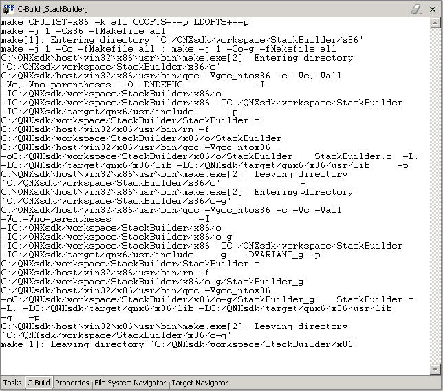
You can choose to clear the C-Build view before each new build or let the results of each subsequent build to append to the display. You can have the C-Build view brought to the top when you build.
To access the C-Build view configurations:
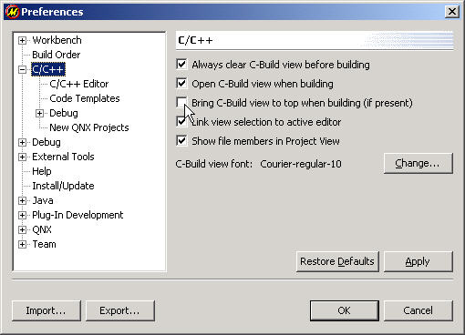